Meme 1 Meme
IG: The real one hits different.
What are you actually grateful for this year — the specific, slightly embarrassing, took-you-by-surprise things?
#thanksgiving #journalingprompts #gratitude #zenieapp #selfawareness
FB: There’s the gratitude list you’d read aloud at the table, and then there’s the real one. Tonight’s prompt: what are you actually grateful for this year — the specific, slightly embarrassing, took-you-by-surprise things? Drop one below, or just write it for yourself.
#thanksgiving #journalingprompts #gratitude #zenieapp #selfawareness
Best time: Wednesday 7–9 PM PST
🎯 happy_tears_clasp depicts the emotional response to genuine gratitude; overlay follows the ‘rereading what you wrote in private’ benchmark pattern; Thanksgiving timing and hyper-specific framing (“11pm when no one was watching”) expect comments and saves from people writing their real list.
Carousel 1 CarouselThings no one told you
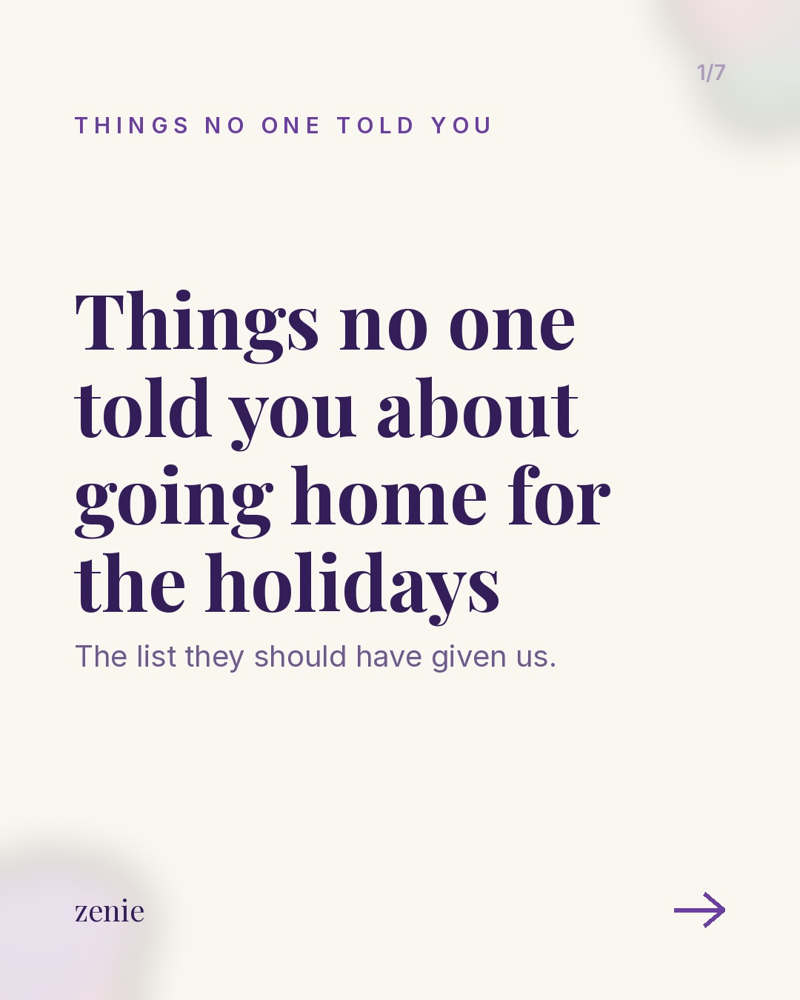
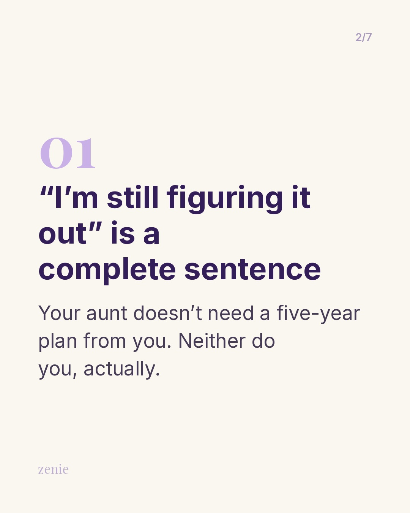
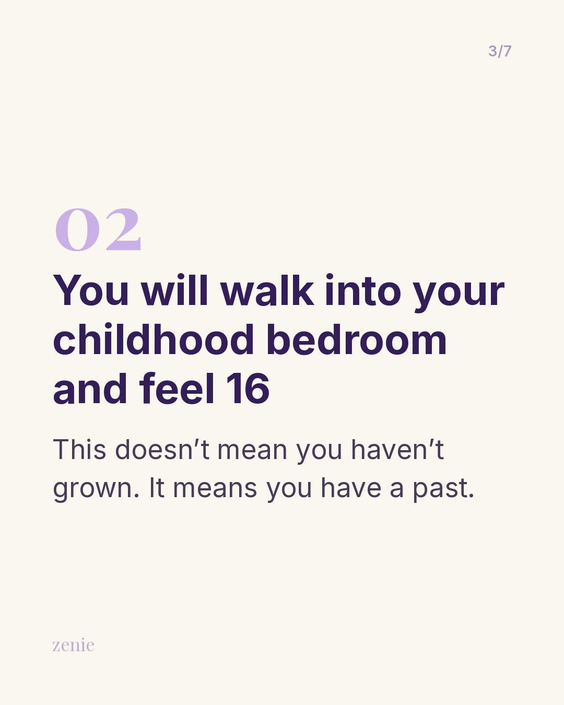
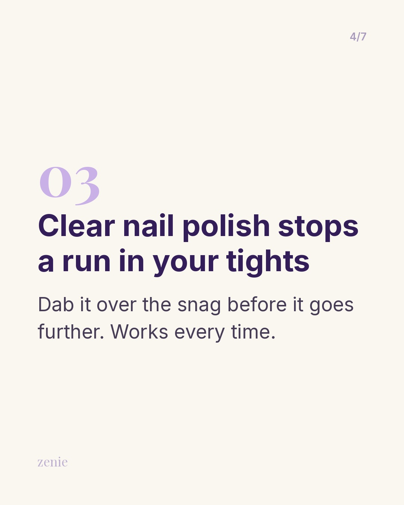
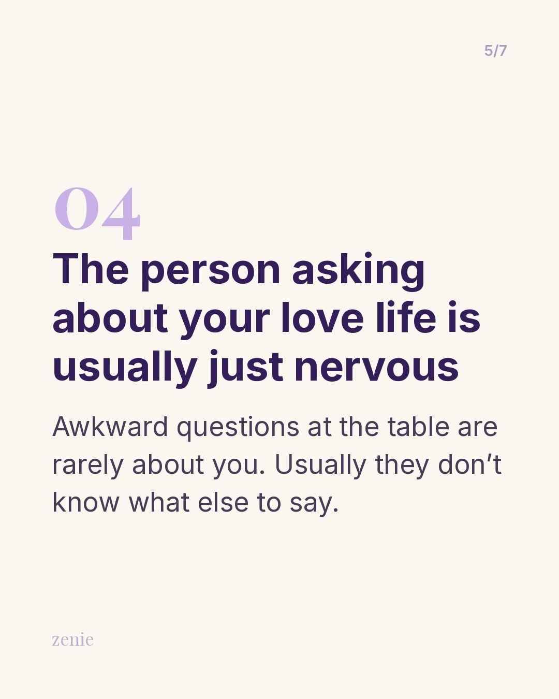
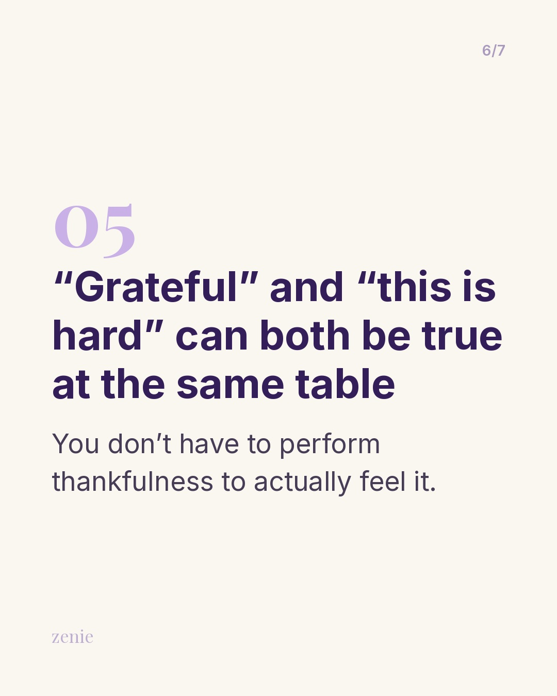
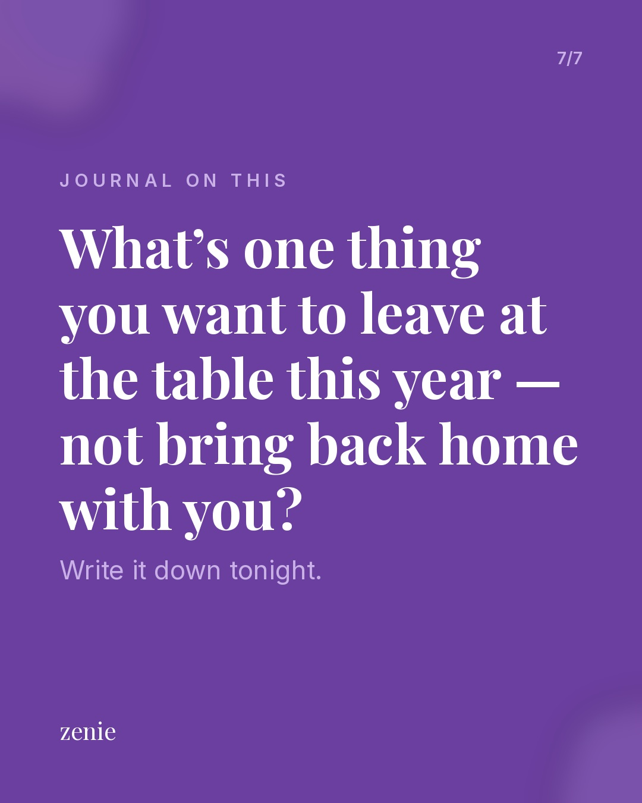
Swipe sideways to see every slide.
IG: Things no one told you about going home for the holidays.
What’s one thing you want to leave at the table this year — not bring back home with you?
Save this for the drive home.
#quarterlifecrisis #thanksgiving #journalingprompts #selfreflection #zenieapp
FB: A few things about going home that someone really should have warned us about. The last one is tonight’s prompt: what’s one thing you want to leave at the table this year, not bring back home with you? Save this or send it to a friend who needs it.
#quarterlifecrisis #thanksgiving #journalingprompts #selfreflection #zenieapp
Best time: Tuesday 7–9 PM PST
🎯 things_no_one_told_you carousel timed to Thanksgiving week, mixing one practical tip (nail polish) with emotional truths about family dynamics; the ‘grateful and hard can both be true’ slide and the prompt are designed to be saved and sent between siblings and friends going home.
Reel 1 ReelQuarter-Life Check-In
No sound is baked in: add a trending audio in the Instagram app when posting.
Footage: Pexels (free to use, no credit needed).
IG: Still got three days to rehearse.
What question are you most dreading this week — and what would you actually say if you told the truth?
Save this for the drive home.
#quarterlifecrisis #journalingprompts #selfreflection #zenieapp #quarterlifecheck
FB: If you’ve been mentally rehearsing your ‘so what are you doing with your life’ answer since October, this one’s for you. Here’s the question worth writing down before Thursday: what would you actually say if you told the truth this week?
#quarterlifecrisis #journalingprompts #selfreflection #zenieapp #quarterlifecheck
Best time: Monday 7–9 PM PST
🎯 Pinned Thanksgiving-week POV using the universal ‘family interrogation before the holiday’ anxiety; landing on the gap between rehearsed answer and honest one expects strong shares among people who would immediately send it to a friend who gets it.
Reel 2 ReelSunday Scaries
No sound is baked in: add a trending audio in the Instagram app when posting.
Footage: Pexels (free to use, no credit needed).
IG: The year from the inside, looking out.
What do you understand about your 2026 that you couldn’t see while you were living it?
Save this for tonight.
#sundayscaries #selfreflection #journalingprompts #zenieapp #quarterlifecrisis
FB: Looking backwards at this year from the last weeks of November. Kierkegaard said it plainly: you can only understand it after. What do you understand about your 2026 that you couldn’t see while you were living it? Write it down tonight.
#sundayscaries #selfreflection #journalingprompts #zenieapp #quarterlifecrisis
Best time: Sunday 6–8 PM PST
🎯 Quote Reel using Kierkegaard’s ‘backwards/forwards’ line timed to Thanksgiving Sunday — the quote maps onto the year-end backwards look that the last weeks of November trigger; expect saves from people starting their year-in-review.
Text Card 1 Text Card
IG: The late-night version hits different.
What would your actual gratitude list say tonight?
Send this to whoever would write the same one.
#thanksgiving #journalingprompts #gratitude #zenieapp #selfawareness
FB: The one you’d type at midnight when no one’s grading it. Tonight’s prompt: what would your actual gratitude list say? Tag someone who’d write the same one.
#thanksgiving #journalingprompts #gratitude #zenieapp #selfawareness
Best time: Thursday 6–8 PM PST
🎯 notes_app card styled as a midnight Thanksgiving gratitude list — the specificity (‘the group chat that got the screenshot’, ‘still don’t know what I’m doing and somehow made it to 26’) makes it shareable to close friends on Thanksgiving night; expect sends over saves.
Repost 1 Repost
Watch the reel · credit @drjulie
IG: The question worth asking after a heavy week.
Which one is it right now — and what does it feel like to actually name it?
Credit: @drjulie
#mentalhealth #journalingprompts #selfreflection #zenieapp #emotionalintelligence
FB: Dr. Julie’s question is worth sitting with. It’s not always depression — sometimes it’s just sadness, and knowing the difference changes what you do next. Write it down: which one is it right now for you, and what does it feel like to actually name it?
Credit: @drjulie
#mentalhealth #journalingprompts #selfreflection #zenieapp #emotionalintelligence
Best time: Friday 7–9 PM PST
🎯 confession_then_turn format: dr. julie’s depression-vs-sadness question posted post-Thanksgiving Friday, when the holiday-family-interaction hangover surfaces real feelings; the prompt asks to name the distinction and expect saves from people who needed to hear it.
Story 1 StoryQuarter-Life Check-In
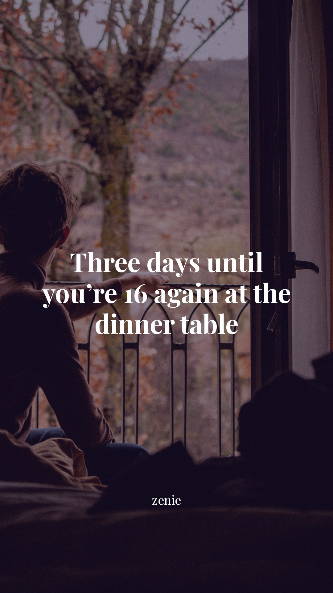
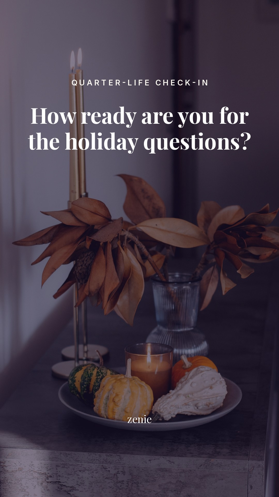
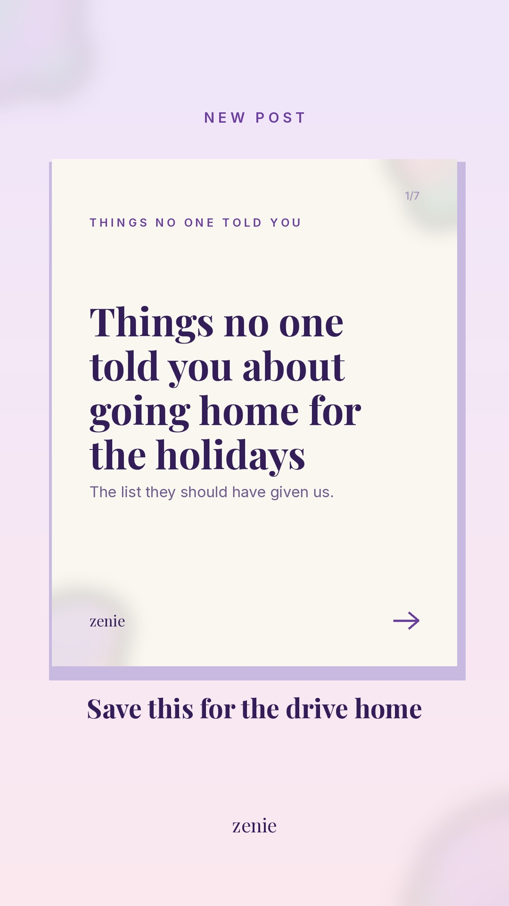
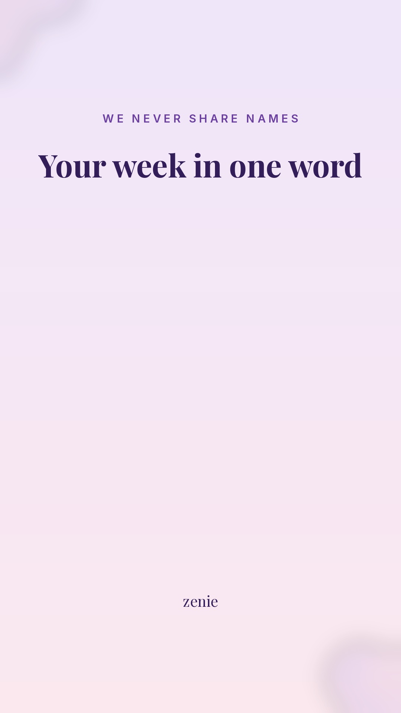
Swipe sideways to see every frame.
Frame 2: add a poll sticker in the empty middle — options: Bring it on / Send help.
Frame 4: add a question sticker in the empty middle.
Best time: Wednesday 2–4 PM PST
🎯 story_check_in with mostly passive frames and exactly one poll — fixes last week’s three-ask problem; the Thanksgiving angle and feature of Carousel 1 expect higher tap-through and poll engagement than the Nov 16 story.